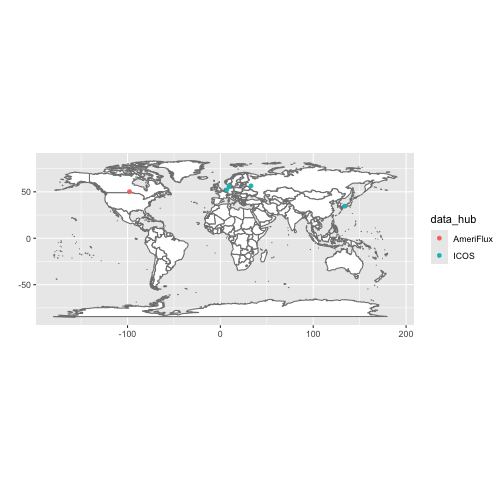

library(fluxnet)
#> ! Use of data downloaded by fluxnet requires you abide by FLUXNET data policies: <
#> ℹ Citations for individual sites' datasets are returned by `
library(dplyr)Discovering what is available for download
flux_listall() is an R wrapper around a command line
program, fluxnet-shuttle,
which requires Python. The first time you run
flux_listall(), a Python virtual environment will be
created and fluxnet-shuttle will be installed into it. If
you don’t have an appropriate version of Python installed, you may be
prompted with tips on how to install it.
list <- flux_listall()#> virtualenv: fluxnet
#> File list is expired, downloading the latest versionBy default, the results of flux_listall() are saved in a
user cache, so when you run it again it’ll pull the results from there
unless they are older than cach_age. To ignore the cache,
use use_cache = FALSE. To invalidate the cache
(and replace it with an updated one), use
cache_age = -Inf.
# Don't use cached results:
list <- flux_listall(use_cache = FALSE)
# Invalidate and replace cached results:
list <- flux_listall(cache_age = -Inf)The list returned by flux_listall() contains metadata on
the available sites including, importantly, citations for site-level
data attribution which is required by FLUXNET.
colnames(list)
#> [1] "data_hub" "site_id" "site_name" "location_lat" "location_long" "igbp" "network"
#> [8] "team_member_name" "team_member_role" "team_member_email" "first_year" "last_year" "download_link" "fluxnet_product_name"
#> [15] "product_citation" "product_id" "oneflux_code_version" "product_source_network"
list %>% select(site_id, product_citation)
#> # A tibble: 301 × 2
#> site_id product_citation
#> <chr> <chr>
#> 1 AR-CCg Gabriela Posse (2025), AmeriFlux FLUXNET-1F AR-CCg Carlos Casares grassland, Ver. v1.3_r1, AmeriFlux AMP, (Dataset). https://doi.org/10.17190/AMF/2469434
#> 2 AR-TF1 Lars Kutzbach (2025), AmeriFlux FLUXNET-1F AR-TF1 Rio Moat bog, Ver. v1.3_r1, AmeriFlux AMP, (Dataset). https://doi.org/10.17190/AMF/1818370
#> 3 AR-TF2 Lars Kutzbach (2025), AmeriFlux FLUXNET-1F AR-TF2 Rio Pipo bog, Ver. v1.3_r1, AmeriFlux AMP, (Dataset). https://doi.org/10.17190/AMF/2571120
#> 4 BR-CST Antonio Antonino (2025), AmeriFlux FLUXNET-1F BR-CST Caatinga Serra Talhada, Ver. v1.3_r1, AmeriFlux AMP, (Dataset). https://doi.org/10.17190/AMF/1902820
#> 5 CA-ARB Aaron Todd, Elyn Humphreys (2025), AmeriFlux FLUXNET-1F CA-ARB Attawapiskat River Bog, Ver. v1.3_r1, AmeriFlux AMP, (Dataset). https://doi.org/10.17190/AMF/1902821
#> 6 CA-Ca1 T. Andrew Black (2025), AmeriFlux FLUXNET-1F CA-Ca1 British Columbia - 1949 Douglas-fir stand, Ver. v1.3_r1, AmeriFlux AMP, (Dataset). https://doi.org/10.17190/AMF/2007163
#> 7 CA-Ca2 T. Andrew Black (2025), AmeriFlux FLUXNET-1F CA-Ca2 British Columbia - Clearcut Douglas-fir stand (harvested winter 1999/2000), Ver. v1.3_r1, AmeriFlux AMP, (Dataset). https://doi.org/10…
#> 8 CA-DB2 Sara Knox (2025), AmeriFlux FLUXNET-1F CA-DB2 Delta Burns Bog 2, Ver. v1.3_r1, AmeriFlux AMP, (Dataset). https://doi.org/10.17190/AMF/1881564
#> 9 CA-DBB Andreas Christen, Sara Knox (2025), AmeriFlux FLUXNET-1F CA-DBB Delta Burns Bog, Ver. v1.3_r1, AmeriFlux AMP, (Dataset). https://doi.org/10.17190/AMF/1881565
#> 10 CA-DSM Sara Knox (2025), AmeriFlux FLUXNET-1F CA-DSM Delta Salt Marsh, Ver. v1.3_r1, AmeriFlux AMP, (Dataset). https://doi.org/10.17190/AMF/2571137
#> # ℹ 291 more rowsDownloading data
There are a few paths to downloading FLUXNET data. If you just want
to download everything available, simply run
flux_download(). You can download just specific sites with
the site_ids argument, or you can filter the results of
flux_listall() and pass those in.
# Download everything available.
flux_download()
# Download just certain sites
flux_download(site_ids = c("AR-CCg", "AR-TF1", "BR-CST"))
# Filter list and download
list_wet <- list %>% filter(igbp == "WET")
flux_download(file_list_df = list_wet)#> Downloading data from all available sites.
#>
[working] (0 + 0) -> 4 -> 1 | ■■■■■■■ 20%
#>
[working] (0 + 0) -> 3 -> 2 | ■■■■■■■■■■■■■ 40%
#>
[working] (0 + 0) -> 2 -> 3 | ■■■■■■■■■■■■■■■■■■■ 60%
#>
[working] (0 + 0) -> 1 -> 4 | ■■■■■■■■■■■■■■■■■■■■■■■■■ 80%
#>
Extracting data from .zip files
flux_extract() allows you to unzip only desired files
from all or some of the downloaded site .zip files.
# Extract everything (not recommended!)
flux_extract()
# Extract just annual and monthly data
flux_extract(resolutions = c("y", "m"))
# Extract hourly data for just certain sites
flux_extract(site_ids = c("AR-CCg", "AR-TF1"), resolutions = "h")
# Don't extract BIF and BIFVARINFO CSVs
flux_extract(extract_varinfo = FALSE)Discovering what data you have extracted
flux_discover_files() is used to create a “manifest” of
the data available to read in. You must create this manifest
(and optionally filter it) to pass into flux_read().
manifest <- flux_discover_files()
manifest#> MM / ERA5 → 5 sites, 221 site-years across 5 files
#> MM / FLUXMET → 5 sites, 18 site-years across 5 files
#> YY / ERA5 → 5 sites, 221 site-years across 5 files
#> YY / FLUXMET → 5 sites, 18 site-years across 5 files
#> # A tibble: 35 × 23
#> path product_source_network site_id dataset time_resolution first_year last_year oneflux_code_version release_version download_time data_hub site_name location_lat location_long igbp
#> <fs::path> <chr> <chr> <chr> <chr> <int> <int> <chr> <chr> <dttm> <chr> <chr> <dbl> <dbl> <chr>
#> 1 ….3_r1.csv AMF CA-MA1 BIF <NA> 2009 2011 v1.3 r1 2026-03-17 14:47:12 AmeriFl… Manitoba… 50.2 -97.9 CRO
#> 2 ….3_r1.csv AMF CA-MA1 BIFVAR… MM 2009 2011 v1.3 r1 2026-03-17 14:47:12 AmeriFl… Manitoba… 50.2 -97.9 CRO
#> 3 ….3_r1.csv AMF CA-MA1 BIFVAR… YY 2009 2011 v1.3 r1 2026-03-17 14:47:12 AmeriFl… Manitoba… 50.2 -97.9 CRO
#> 4 ….3_r1.csv AMF CA-MA1 ERA5 MM 1981 2024 v1.3 r1 2026-03-17 14:47:12 AmeriFl… Manitoba… 50.2 -97.9 CRO
#> 5 ….3_r1.csv AMF CA-MA1 ERA5 YY 1981 2024 v1.3 r1 2026-03-17 14:47:12 AmeriFl… Manitoba… 50.2 -97.9 CRO
#> 6 ….3_r1.csv AMF CA-MA1 FLUXMET MM 2009 2011 v1.3 r1 2026-03-17 14:47:12 AmeriFl… Manitoba… 50.2 -97.9 CRO
#> 7 ….3_r1.csv AMF CA-MA1 FLUXMET YY 2009 2011 v1.3 r1 2026-03-17 14:47:12 AmeriFl… Manitoba… 50.2 -97.9 CRO
#> 8 ….3_r1.csv ICOS DE-Amv BIF <NA> 2023 2024 v1.3 r1 2026-03-17 14:47:12 ICOS Amtsvenn 52.2 6.96 WET
#> 9 ….3_r1.csv ICOS DE-Amv BIFVAR… MM 2023 2024 v1.3 r1 2026-03-17 14:47:12 ICOS Amtsvenn 52.2 6.96 WET
#> 10 ….3_r1.csv ICOS DE-Amv BIFVAR… YY 2023 2024 v1.3 r1 2026-03-17 14:47:12 ICOS Amtsvenn 52.2 6.96 WET
#> # ℹ 25 more rows
#> # ℹ 8 more variables: network <chr>, team_member_name <chr>, team_member_role <chr>, team_member_email <chr>, download_link <chr>, fluxnet_product_name <chr>, product_citation <chr>,
#> # product_id <chr>You can visualize the sites you have data for with
flux_map_sites().
flux_map_sites(manifest)
Reading in data
You can read in data by passing a manifest to
flux_read(). You can read in data for just select sites
with the site_ids argument, but for more complex filtering
you can simply subset the manifest object first.
# Read all available annual data
annual <- flux_read(manifest, resolution = "y")
#> Reading 10 files.
## NOT RUN ##
# Read in hourly data from specific sites
hourly <- flux_read(
manifest,
resolution = "h",
site_ids = c("AR-CCg", "AR-TF1")
)
# Read in only ERA5 data
annual_era5 <- flux_read(manifest, resolution = "y", datasets = "ERA5")
# Filter manifest to just sites with "WET" for IGBP
n_wet_manifest <-
left_join(manifest, list, by = join_by(site_id)) %>%
filter(igbp == "WET", location_lat > 0)
n_wet_monthly <- flux_read(n_wet_manifest, resolution = "m")QC flagging
Fluxnet data can be gapfilled to varying degrees.
flux_qc() allows you to flag overly-gapfilled data using
your choice of variables and gapfilling threshold(s).
Example 1: Flag rows where NEE_VUT_REF is more than 30%
gapfilled
flagged_nee <- flux_qc(annual, qc_vars = "NEE_VUT_REF", max_gapfilled = 0.3)
flagged_nee %>%
filter(qc_flagged) %>%
select(qc_flagged, p_gapfilled, NEE_VUT_REF_QC, everything())
#> # A tibble: 0 × 337
#> # ℹ 337 variables: qc_flagged <lgl>, p_gapfilled <dbl>, NEE_VUT_REF_QC <dbl>, site_id <chr>, dataset <chr>, YEAR <int>, TA_ERA <dbl>, TA_ERA_NIGHT <dbl>, TA_ERA_NIGHT_SD <dbl>, TA_ERA_DAY <dbl>,
#> # TA_ERA_DAY_SD <dbl>, SW_IN_ERA <dbl>, LW_IN_ERA <dbl>, VPD_ERA <dbl>, PA_ERA <dbl>, P_ERA <dbl>, WS_ERA <dbl>, TA_F_MDS <dbl>, TA_F_MDS_QC <dbl>, TA_F_MDS_NIGHT <dbl>, TA_F_MDS_NIGHT_SD <dbl>,
#> # TA_F_MDS_NIGHT_QC <dbl>, TA_F_MDS_DAY <dbl>, TA_F_MDS_DAY_SD <dbl>, TA_F_MDS_DAY_QC <dbl>, TA_F <dbl>, TA_F_QC <dbl>, TA_F_NIGHT <dbl>, TA_F_NIGHT_SD <dbl>, TA_F_NIGHT_QC <dbl>, TA_F_DAY <dbl>,
#> # TA_F_DAY_SD <dbl>, TA_F_DAY_QC <dbl>, SW_IN_F_MDS <dbl>, SW_IN_F_MDS_QC <dbl>, SW_IN_F <dbl>, SW_IN_F_QC <dbl>, LW_IN_F_MDS <dbl>, LW_IN_F_MDS_QC <dbl>, LW_IN_F <dbl>, LW_IN_F_QC <dbl>,
#> # LW_IN_JSB <dbl>, LW_IN_JSB_QC <dbl>, LW_IN_JSB_ERA <dbl>, LW_IN_JSB_F <dbl>, LW_IN_JSB_F_QC <dbl>, VPD_F_MDS <dbl>, VPD_F_MDS_QC <dbl>, VPD_F <dbl>, VPD_F_QC <dbl>, PA_F <dbl>, PA_F_QC <dbl>,
#> # P_F <dbl>, P_F_QC <dbl>, WS_F <dbl>, WS_F_QC <dbl>, USTAR <dbl>, USTAR_QC <dbl>, PPFD_IN <dbl>, PPFD_IN_QC <dbl>, PPFD_OUT <dbl>, PPFD_OUT_QC <dbl>, CO2_F_MDS <dbl>, CO2_F_MDS_QC <dbl>,
#> # TS_F_MDS_1 <dbl>, TS_F_MDS_2 <dbl>, TS_F_MDS_1_QC <dbl>, TS_F_MDS_2_QC <dbl>, SWC_F_MDS_1 <dbl>, SWC_F_MDS_1_QC <dbl>, G_F_MDS <dbl>, G_F_MDS_QC <dbl>, LE_F_MDS <dbl>, LE_F_MDS_QC <dbl>, …Notice that in this case p_gapfilled is just 1 -
NEE_VUT_REF_QC.
Example 2: Flag rows where NEE_VUT_REF or TA_F are more than 30% gapfilled
flagged_2 <- flux_qc(
annual,
qc_vars = c("NEE_VUT_REF", "TA_F"),
max_gapfilled = 0.3
)
flagged_2 %>%
filter(qc_flagged) %>%
select(qc_flagged, p_gapfilled, NEE_VUT_REF_QC, TA_F_QC, everything())
#> # A tibble: 6 × 337
#> qc_flagged p_gapfilled NEE_VUT_REF_QC TA_F_QC site_id dataset YEAR TA_ERA TA_ERA_NIGHT TA_ERA_NIGHT_SD TA_ERA_DAY TA_ERA_DAY_SD SW_IN_ERA LW_IN_ERA VPD_ERA PA_ERA P_ERA WS_ERA TA_F_MDS
#> <lgl> <dbl> <dbl> <dbl> <chr> <chr> <int> <dbl> <dbl> <dbl> <dbl> <dbl> <dbl> <dbl> <dbl> <dbl> <dbl> <dbl> <dbl>
#> 1 TRUE 0.386 NA 0.614 CA-MA1 FLUXMET 2009 1.43 0.429 2.42 2.20 2.46 170. 276. 2.78 98.6 421. 3.23 NA
#> 2 TRUE 0.817 NA 0.183 DK-Gds FLUXMET 2020 9.30 8.09 1.47 10.1 1.91 110. 312. 2.51 99.8 1002. 3.80 NA
#> 3 TRUE 0.597 NA 0.403 JP-Hc3 FLUXMET 2005 15.6 15.1 1.57 16.0 1.55 171. 330. 4.28 101. 3387. 1.41 16.0
#> 4 TRUE 0.627 NA 0.373 JP-Hc3 FLUXMET 2006 16.0 15.6 1.37 16.3 1.47 159. 336. 4.08 101 4988. 1.30 23.7
#> 5 TRUE 0.486 NA 0.514 RU-Fy4 FLUXMET 2015 5.83 4.61 1.94 6.60 2.45 110. 311. 2.52 97.4 366. 2.25 NA
#> 6 TRUE 0.392 0.700 0.608 RU-Fy4 FLUXMET 2019 6.00 4.75 1.92 6.73 2.36 107. 314. 2.41 97.3 447. 2.27 7.34
#> # ℹ 318 more variables: TA_F_MDS_QC <dbl>, TA_F_MDS_NIGHT <dbl>, TA_F_MDS_NIGHT_SD <dbl>, TA_F_MDS_NIGHT_QC <dbl>, TA_F_MDS_DAY <dbl>, TA_F_MDS_DAY_SD <dbl>, TA_F_MDS_DAY_QC <dbl>, TA_F <dbl>,
#> # TA_F_NIGHT <dbl>, TA_F_NIGHT_SD <dbl>, TA_F_NIGHT_QC <dbl>, TA_F_DAY <dbl>, TA_F_DAY_SD <dbl>, TA_F_DAY_QC <dbl>, SW_IN_F_MDS <dbl>, SW_IN_F_MDS_QC <dbl>, SW_IN_F <dbl>, SW_IN_F_QC <dbl>,
#> # LW_IN_F_MDS <dbl>, LW_IN_F_MDS_QC <dbl>, LW_IN_F <dbl>, LW_IN_F_QC <dbl>, LW_IN_JSB <dbl>, LW_IN_JSB_QC <dbl>, LW_IN_JSB_ERA <dbl>, LW_IN_JSB_F <dbl>, LW_IN_JSB_F_QC <dbl>, VPD_F_MDS <dbl>,
#> # VPD_F_MDS_QC <dbl>, VPD_F <dbl>, VPD_F_QC <dbl>, PA_F <dbl>, PA_F_QC <dbl>, P_F <dbl>, P_F_QC <dbl>, WS_F <dbl>, WS_F_QC <dbl>, USTAR <dbl>, USTAR_QC <dbl>, PPFD_IN <dbl>, PPFD_IN_QC <dbl>,
#> # PPFD_OUT <dbl>, PPFD_OUT_QC <dbl>, CO2_F_MDS <dbl>, CO2_F_MDS_QC <dbl>, TS_F_MDS_1 <dbl>, TS_F_MDS_2 <dbl>, TS_F_MDS_1_QC <dbl>, TS_F_MDS_2_QC <dbl>, SWC_F_MDS_1 <dbl>, SWC_F_MDS_1_QC <dbl>,
#> # G_F_MDS <dbl>, G_F_MDS_QC <dbl>, LE_F_MDS <dbl>, LE_F_MDS_QC <dbl>, LE_CORR <dbl>, LE_RANDUNC <dbl>, H_F_MDS <dbl>, H_F_MDS_QC <dbl>, H_CORR <dbl>, H_RANDUNC <dbl>, EBC_CF_N <dbl>,
#> # EBC_CF_METHOD <dbl>, NIGHT_RANDUNC_N <dbl>, DAY_RANDUNC_N <dbl>, NEE_CUT_REF <dbl>, NEE_VUT_REF <dbl>, NEE_CUT_REF_QC <dbl>, NEE_CUT_REF_RANDUNC <dbl>, NEE_VUT_REF_RANDUNC <dbl>, …Now p_gapfilled is 1 - the smaller of
NEE_VUT_REF_QC and TA_F_QC.
Example 3: Flag rows where NEE_VUT_REF is more than 30% gapfilled and TA_F is more than 10% gapfilled
flagged_3 <- flux_qc(
annual,
qc_vars = c("NEE_VUT_REF", "TA_F"),
max_gapfilled = c(0.3, 0.1),
operator = "all"
)
flagged_3 %>%
filter(qc_flagged) %>%
select(qc_flagged, p_gapfilled, NEE_VUT_REF_QC, TA_F_QC, everything())
#> # A tibble: 0 × 337
#> # ℹ 337 variables: qc_flagged <lgl>, p_gapfilled <dbl>, NEE_VUT_REF_QC <dbl>, TA_F_QC <dbl>, site_id <chr>, dataset <chr>, YEAR <int>, TA_ERA <dbl>, TA_ERA_NIGHT <dbl>, TA_ERA_NIGHT_SD <dbl>,
#> # TA_ERA_DAY <dbl>, TA_ERA_DAY_SD <dbl>, SW_IN_ERA <dbl>, LW_IN_ERA <dbl>, VPD_ERA <dbl>, PA_ERA <dbl>, P_ERA <dbl>, WS_ERA <dbl>, TA_F_MDS <dbl>, TA_F_MDS_QC <dbl>, TA_F_MDS_NIGHT <dbl>,
#> # TA_F_MDS_NIGHT_SD <dbl>, TA_F_MDS_NIGHT_QC <dbl>, TA_F_MDS_DAY <dbl>, TA_F_MDS_DAY_SD <dbl>, TA_F_MDS_DAY_QC <dbl>, TA_F <dbl>, TA_F_NIGHT <dbl>, TA_F_NIGHT_SD <dbl>, TA_F_NIGHT_QC <dbl>,
#> # TA_F_DAY <dbl>, TA_F_DAY_SD <dbl>, TA_F_DAY_QC <dbl>, SW_IN_F_MDS <dbl>, SW_IN_F_MDS_QC <dbl>, SW_IN_F <dbl>, SW_IN_F_QC <dbl>, LW_IN_F_MDS <dbl>, LW_IN_F_MDS_QC <dbl>, LW_IN_F <dbl>,
#> # LW_IN_F_QC <dbl>, LW_IN_JSB <dbl>, LW_IN_JSB_QC <dbl>, LW_IN_JSB_ERA <dbl>, LW_IN_JSB_F <dbl>, LW_IN_JSB_F_QC <dbl>, VPD_F_MDS <dbl>, VPD_F_MDS_QC <dbl>, VPD_F <dbl>, VPD_F_QC <dbl>,
#> # PA_F <dbl>, PA_F_QC <dbl>, P_F <dbl>, P_F_QC <dbl>, WS_F <dbl>, WS_F_QC <dbl>, USTAR <dbl>, USTAR_QC <dbl>, PPFD_IN <dbl>, PPFD_IN_QC <dbl>, PPFD_OUT <dbl>, PPFD_OUT_QC <dbl>, CO2_F_MDS <dbl>,
#> # CO2_F_MDS_QC <dbl>, TS_F_MDS_1 <dbl>, TS_F_MDS_2 <dbl>, TS_F_MDS_1_QC <dbl>, TS_F_MDS_2_QC <dbl>, SWC_F_MDS_1 <dbl>, SWC_F_MDS_1_QC <dbl>, G_F_MDS <dbl>, G_F_MDS_QC <dbl>, LE_F_MDS <dbl>, …Because we’ve set operator = "all",
p_gapfilled is now 1 - the larger of
NEE_VUT_REF_QC and TA_F_QC and all of the
values are greater than the smaller of the max_gapfilled
values.